"Mở Hôm nay, mỗi người thấy một danh sách việc của mình, cùng một kiểu dòng cho mọi vai; phần theo dõi về đúng nhà"
Vì sao làm
Chủ kho mở Cổng Phạm vi 09/11 sau audit docs/plan/audit-man-hom-nay.md. /today đang là bốn màn của bốn vai xếp một cột; từ 08/11 chủ sàn mới mang đủ năm vai. Hợp đồng viết theo khuyến nghị của Hỏi-1 đến Hỏi-6.
Đã hứa
- AC-1 — Given người mang bất kỳ vai nào có Hôm nay, When mở `/today` trên máy tính, Then trang có một vùng chính, một tiêu đề
- AC-2 — Given người đủ năm vai có việc ở mọi nguồn, When xem danh sách, Then mọi dòng việc cùng bốn cột Việc · Vì sao hôm nay ·
- AC-3 — (cross-layer) Given trưởng nhóm và một lead quá hạn, When bấm «Giao lại» trên dòng và chọn đầu chủ, Then lead được giao
- AC-4 — (cross-layer) Given telesales có lead bị trả lại và lead đang chạy, When mở Hôm nay, Then lead bị trả lại là một việc
- AC-5 — Given đầu khách có tin khách phản ứng, căn vừa đổi, căn mới khớp, When mở Hôm nay, Then mỗi tin trong 48 giờ là một việc
- AC-6 — Given trưởng nhóm, When mở `/team`, Then thấy ba ô số và bảng theo đầu chủ với số giống Hôm nay trưởng nhóm trước
- AC-7 — Given đầu khách, When mở mục «Tin của khách» ở cột thứ hai của Đã gửi, Then thấy tin 7 ngày như vùng Đầu khách cũ, bố
- AC-8 — Given người xem theo từng tổ hợp vai và sàn đã đổi tên một nhóm, kể cả nhóm của vai khác đầu chủ, When xem cột thứ hai của
- AC-9 — Given một nguồn trả 500 hai lần liên tiếp, When mở Hôm nay, Then có đúng một dòng báo nêu tên nguồn và một «Thử lại»,
- AC-10 — Given khổ 375 ở mọi vai, When xem Hôm nay, Then mỗi việc là thẻ hai tầng, tên căn và toà đọc đủ không bị nút ép, trưởng
Thiết kế
docs/superpowers/specs/2026-11-09-hom-nay-mot-danh-sach-viec-design.md
Quyết định
- 2026-11-09 · Máy · approach · S1 — Đã tra tri thức: Mở Hôm nay, mỗi người thấy một danh sách việc của mìnhKho đã khai tri_thuc — bước thiết kế tra trang trước khi chọn.
- 2026-11-09 · Máy · approach · S1 — Hỏi-1 — chọn lối dựng Hôm nay: khuyên Trong kho, một danh sách việc cùng kiểu dòng cho mọi vai.Đổi nghĩa màn mọi vai thấy và đảo Hỏi-2 đã ký của hàng 42; ba lối ở ba-loi/index.html.
- 2026-11-09 · Máy · approach · S1 — Hỏi-2 — telesales thuần: khuyên thấy việc Lead bị trả lại cộng một dòng Lead đã nhập (N) dẫn tới trang riêng.Tham chiếu 01/11 chốt telesales mở Hôm nay thấy lead mình nhập; đổi điều này là nghĩa sản phẩm.
- 2026-11-09 · Máy · approach · S1 — Hỏi-3 — việc đầu khách hết thế nào: khuyên tự hết sau 48 giờ, không đổi cơ sở dữ liệu.Tin phản ứng chưa có trạng thái xong; ngành không có chuẩn cho ca này theo doi-chieu-nganh mục 13.
- 2026-11-09 · Máy · approach · S1 — Hỏi-4 — nhãn nút nhóm Thiếu thông tin: khuyên đổi thành Mở hồ sơ.Đo khổ 1440 chữ 156 px trong khung 142 px, khổ 375 ép tên căn; nhãn đã duyệt ở AC-3 của hàng 92 nên phải hỏi.
- 2026-11-09 · Máy · approach · S1 — Hỏi-5 — nhóm của vai khác và mốc 48 giờ: khuyên bản đầu chỉ cho sàn đổi tên nhóm, phần còn lại ghi điều khoá, xem lại khi có sàn thứ hai hỏi.Luật thiet-ke-doi-chieu: mỗi dòng ta cứng — họ cấu hình là một Hỏi, máy không tự chọn giữ cứng.
- 2026-11-09 · Máy · approach · S1 — Bảng theo đầu chủ và ba ô số dời sang nhà Đội bằng nguyên khối đang có.Nhà Đội được định nghĩa để trả lời đúng câu này và đang là trang tạm.
- 2026-11-09 · Máy · descope · S1 — Không gộp lời gọi đọc và tải trước trong vòng này; để hàng R5 của audit.Bản thật đã sang chế độ giao dịch 09/11 và 30 phút theo dõi sạch nên áp lực kết nối giảm; cần đo lại trước khi tối ưu.
- 2026-11-09 · Máy · approach · S1 — Hỏi-6 — trưởng nhóm giao lại trên điện thoại: khuyên có, qua ngăn đáy.Bỏ dòng «mở trên máy tính» là nghĩa sản phẩm mới, phản biện context sạch chỉ ra chưa có dòng sổ.
- 2026-11-09 · Người · seal · gate1 —
- 2026-11-09 · Máy · approach · S3 — Thêm bước dựng chỗ thử vào đầu mọi bài nhìn màn; chỉ thêm bước, không đổi điều chấm.Người chấm độc lập cần dữ liệu đủ các loại việc mà sàn mẫu tự nạp không có.
- 2026-11-09 · Máy · approach · S3 — Chỗ thử ghi trực tiếp hai dòng danh mục căn cho ca căn mới khớp; gửi link, khách mở, đổi giá, lên Đang bán vẫn đi qua API thật.Danh mục do OneHub Invest đẩy qua kết nối, API của Quỹ hàng không có đường ghi nào cho nó, bộ kiểm cơ sở dữ liệu cũng nạp như vậy.
- 2026-11-09 · Máy · fix · S4-r1 — Sửa lỗi AC-9 lượt 1: đầu màn không nói «Không còn việc» khi có nguồn của vai người xem đọc hỏng.Phản biện lượt 1 bắt được: thân màn đã tránh, riêng đầu màn đọc số 0 rồi báo hết việc.
- 2026-11-09 · Máy · fix · S4-r1 — Viết các bài test mà E2, E3b, E5, E8, E9 đã hứa nhưng còn thiếu: ma trận năm vai × tám loại việc, dòng đầu khách không có khoá lớp nguồn, giao lại rời hàng đợi, cột hai đi qua đường gộp thật, đọc lại qua fetch giả.Lượt 1 chấm các eval này đạt chỉ theo mã thoát, trong khi phép phân loại xếp thiếu sót ra ngoài hợp đồng; tên ca và đối chứng nằm trong expected đã duyệt nên phải có thật.
- 2026-11-09 · Máy · fix · S4-r1 — Ghim lại bản đồ khuôn sau khi đổi: bản ghim cũ có từ trước khi vòng đổi bản đồ, mà chính E11 đòi gỡ các khai ngoại lệ của /today.Với bản ghim cũ E11 không thể đạt: bản đồ cũ trỏ tệp đã dời và coi màn Đội, Tin của khách là trang tạm.
- 2026-11-09 · Người (Manh Phan) · approach · gate1 — Sửa: E11 chấp nhận mã 1 khi chỉ có đúng một dòng lệch «shares/tin · hai nhóm màn · hom-nay-dau-khach, trang-tam», lệch khác vẫn đỏ; bỏ khi kit vá. Chủ kho trả lời: «Đồng ý, chấm tiếp».Kit 2.37.0 không xét ngoai_le nên báo oan trang Tin của khách mới; luật đợt 33 cấm sửa bản đồ để lách; E11b giữ lệch khác vẫn đỏ, như E13 của luong-gui.
- 2026-11-09 · Máy · revisit · gate2 — Ngoài-1: ghi Known limitsmáy tự định tuyến theo đề xuất S4 «known-limits» — kho bật feature_loop.ngoai_n_tu_dinh_tuyen
- 2026-11-09 · Máy · revisit · gate2 — Ngoài-2: ghi Known limitsmáy tự định tuyến theo đề xuất S4 «known-limits» — kho bật feature_loop.ngoai_n_tu_dinh_tuyen
- 2026-11-09 · Máy · revisit · gate2 — Ngoài-5: ghi Known limitsmáy tự định tuyến theo đề xuất S4 «known-limits» — kho bật feature_loop.ngoai_n_tu_dinh_tuyen
- 2026-11-09 · Máy · revisit · gate2 — Ngoài-6: ghi Known limitsmáy tự định tuyến theo đề xuất S4 «known-limits» — kho bật feature_loop.ngoai_n_tu_dinh_tuyen
- 2026-11-09 · Máy · revisit · gate2 — Ngoài-7: ghi Known limitsmáy tự định tuyến theo đề xuất S4 «known-limits» — kho bật feature_loop.ngoai_n_tu_dinh_tuyen
- 2026-11-09 · Máy · revisit · gate2 — Ngoài-8: chấp nhận, không sửamáy tự định tuyến theo đề xuất S4 «wont-fix» — kho bật feature_loop.ngoai_n_tu_dinh_tuyen
- 2026-11-09 · Máy · revisit · gate2 — Ngoài-9: ghi Known limitsmáy tự định tuyến theo đề xuất S4 «known-limits» — kho bật feature_loop.ngoai_n_tu_dinh_tuyen
- 2026-11-09 · Máy · revisit · gate2 — Ngoài-10: ghi Known limitsmáy tự định tuyến theo đề xuất S4 «known-limits» — kho bật feature_loop.ngoai_n_tu_dinh_tuyen
- 2026-11-09 · Máy · revisit · gate2 — Ngoài-12: ghi Known limitsmáy tự định tuyến theo đề xuất S4 «known-limits» — kho bật feature_loop.ngoai_n_tu_dinh_tuyen
- 2026-11-09 · Máy · revisit · gate2 — Ngoài-13: ghi Known limitsmáy tự định tuyến theo đề xuất S4 «known-limits» — kho bật feature_loop.ngoai_n_tu_dinh_tuyen
- 2026-11-09 · Máy · revisit · gate2 — Ngoài-16: ghi Known limitsmáy tự định tuyến theo đề xuất S4 «known-limits» — kho bật feature_loop.ngoai_n_tu_dinh_tuyen
- 2026-11-09 · Máy · revisit · gate2 — Ngoài-17: ghi Known limitsmáy tự định tuyến theo đề xuất S4 «known-limits» — kho bật feature_loop.ngoai_n_tu_dinh_tuyen
- 2026-11-09 · Máy · revisit · gate2 — Ngoài-18: ghi Known limitsmáy tự định tuyến theo đề xuất S4 «known-limits» — kho bật feature_loop.ngoai_n_tu_dinh_tuyen
- 2026-11-09 · Máy · revisit · gate2 — Ngoài-19: ghi Known limitsmáy tự định tuyến theo đề xuất S4 «known-limits» — kho bật feature_loop.ngoai_n_tu_dinh_tuyen
- 2026-11-09 · Máy · revisit · gate2 — Ngoài-20: ghi Known limitsmáy tự định tuyến theo đề xuất S4 «known-limits» — kho bật feature_loop.ngoai_n_tu_dinh_tuyen
- 2026-11-09 · Máy · revisit · gate2 — Ngoài-21: ghi Known limitsmáy tự định tuyến theo đề xuất S4 «known-limits» — kho bật feature_loop.ngoai_n_tu_dinh_tuyen
- 2026-11-09 · Máy · revisit · gate2 — Ngoài-22: ghi Known limitsmáy tự định tuyến theo đề xuất S4 «known-limits» — kho bật feature_loop.ngoai_n_tu_dinh_tuyen
- 2026-11-09 · Máy · revisit · gate2 — Ngoài-23: ghi Known limitsmáy tự định tuyến theo đề xuất S4 «known-limits» — kho bật feature_loop.ngoai_n_tu_dinh_tuyen
Bằng chứng
Các eval
| Eval | Tiêu chí | Loại | Verdict | run_id | verified_at |
|---|---|---|---|---|---|
| E1 | AC-1 | ui-check | PASS | E1-20261109 | 2026-11-09T04:50:33Z |
| E1b | AC-1 | ui-check | PASS | minted-hom-nay-mot-danh-sach-viec-E1b-r2 | 2026-11-09T04:50:33Z |
| E2 | AC-2 | test | PASS | minted-hom-nay-mot-danh-sach-viec-E2-r2 | 2026-11-09T04:50:33Z |
| E2b | AC-2 | ui-check | PASS | minted-hom-nay-mot-danh-sach-viec-E2b-r2 | 2026-11-09T04:50:33Z |
| E3 | AC-3 | ui-check | PASS | minted-hom-nay-mot-danh-sach-viec-E3-r2 | 2026-11-09T04:50:33Z |
| E3b | AC-3 | test | PASS | minted-hom-nay-mot-danh-sach-viec-E3b-r2 | 2026-11-09T04:50:33Z |
| E4 | AC-4 | test | PASS | minted-hom-nay-mot-danh-sach-viec-E4-r2 | 2026-11-09T04:50:33Z |
| E4b | AC-4 | ui-check | PASS | minted-hom-nay-mot-danh-sach-viec-E4b-r2 | 2026-11-09T04:50:33Z |
| E5 | AC-5 | test | PASS | minted-hom-nay-mot-danh-sach-viec-E5-r2 | 2026-11-09T04:50:33Z |
| E5b | AC-5 | ui-check | PASS | minted-hom-nay-mot-danh-sach-viec-E5b-r2 | 2026-11-09T04:50:33Z |
| E6 | AC-6 | ui-check | PASS (CARRY-FORWARD TỪ ROUND 1) | minted-hom-nay-mot-danh-sach-viec-E6-r1 | 2026-11-09T02:49:11Z |
| E7 | AC-7 | ui-check | PASS (CARRY-FORWARD TỪ ROUND 1) | minted-hom-nay-mot-danh-sach-viec-E7-r1 | 2026-11-09T02:49:11Z |
| E8 | AC-8 | test | PASS | minted-hom-nay-mot-danh-sach-viec-E8-r2 | 2026-11-09T04:50:33Z |
| E8b | AC-8 | ui-check | PASS | minted-hom-nay-mot-danh-sach-viec-E8b-r2 | 2026-11-09T04:50:33Z |
| E9 | AC-9 | test | PASS | minted-hom-nay-mot-danh-sach-viec-E9-r2 | 2026-11-09T04:50:33Z |
| E9b | AC-9 | ui-check | PASS | minted-hom-nay-mot-danh-sach-viec-E9b-r2 | 2026-11-09T04:50:33Z |
| E10 | AC-10 | ui-check | PASS | minted-hom-nay-mot-danh-sach-viec-E10-r2 | 2026-11-09T04:50:33Z |
| E11 | AC-1 | script | PASS (ĐẠT CÓ GIỚI HẠN) | minted-hom-nay-mot-danh-sach-viec-E11-r2 | 2026-11-09T04:50:33Z |
| E11b | AC-1 | script | PASS | minted-hom-nay-mot-danh-sach-viec-E11b-r2 | 2026-11-09T04:50:33Z |
Chi tiết từng eval
PASS E1 · ui-check
AC-1: Given người mang bất kỳ vai nào có Hôm nay, When mở `/today` trên máy tính, Then trang có một vùng chính, một tiêu đề
PASS E1b · ui-check
AC-1: Given người mang bất kỳ vai nào có Hôm nay, When mở `/today` trên máy tính, Then trang có một vùng chính, một tiêu đề
PASS E2 · test
AC-2: Given người đủ năm vai có việc ở mọi nguồn, When xem danh sách, Then mọi dòng việc cùng bốn cột Việc · Vì sao hôm nay ·
ℹ duration_ms 4290.641875
PASS E2b · ui-check
AC-2: Given người đủ năm vai có việc ở mọi nguồn, When xem danh sách, Then mọi dòng việc cùng bốn cột Việc · Vì sao hôm nay ·

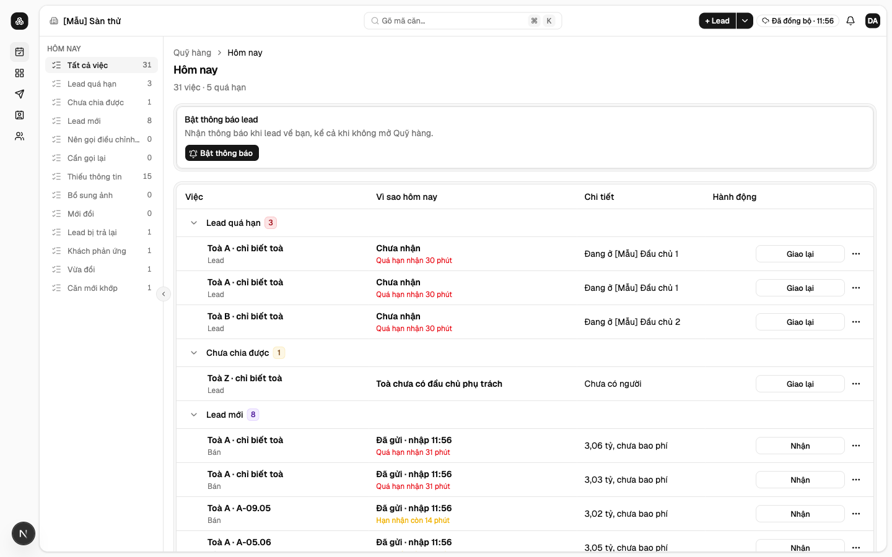
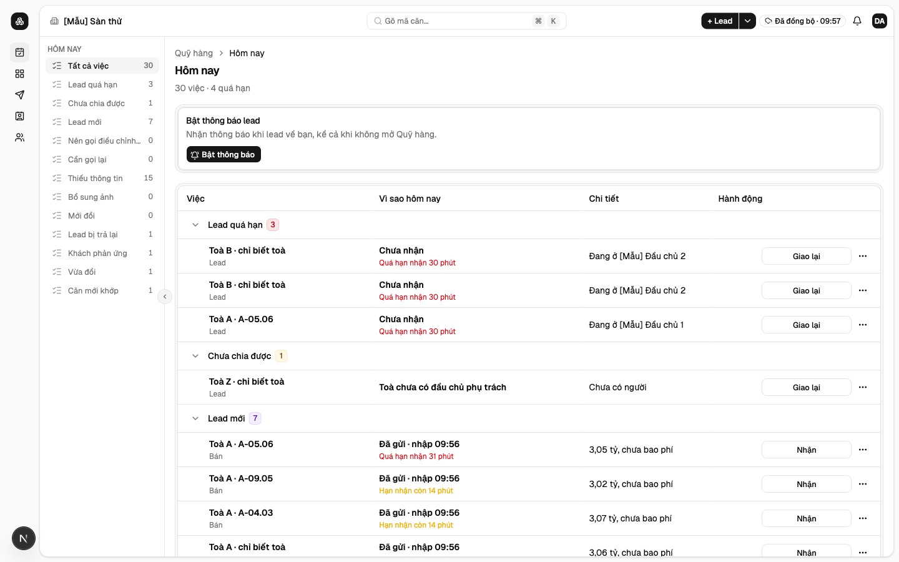
PASS E3 · ui-check
AC-3: (cross-layer) Given trưởng nhóm và một lead quá hạn, When bấm «Giao lại» trên dòng và chọn đầu chủ, Then lead được giao
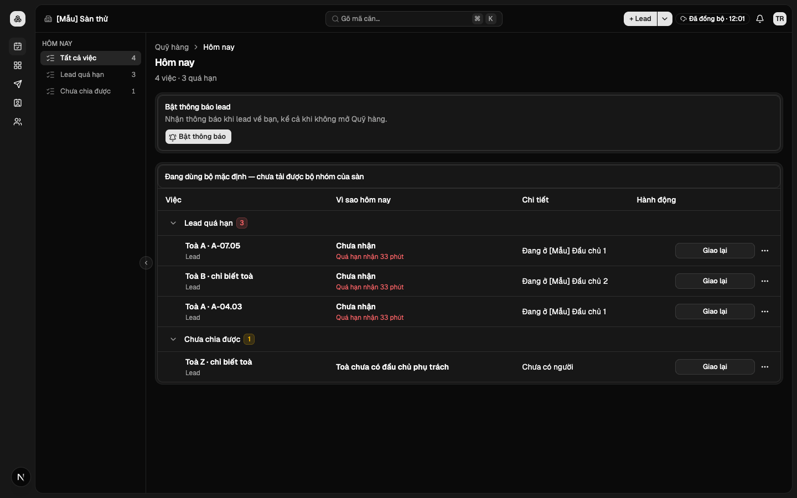
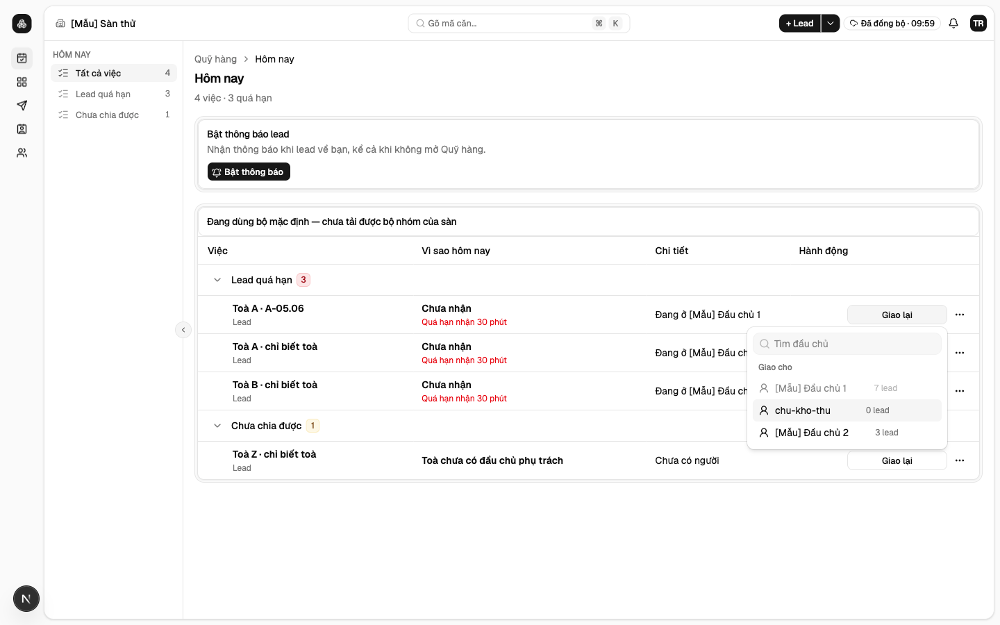
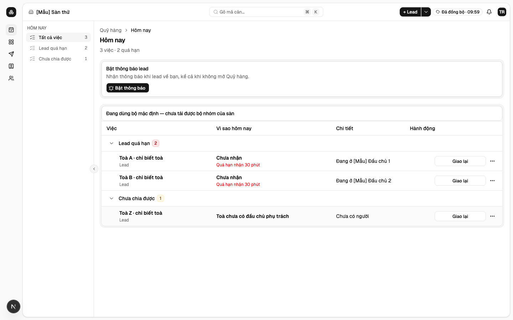
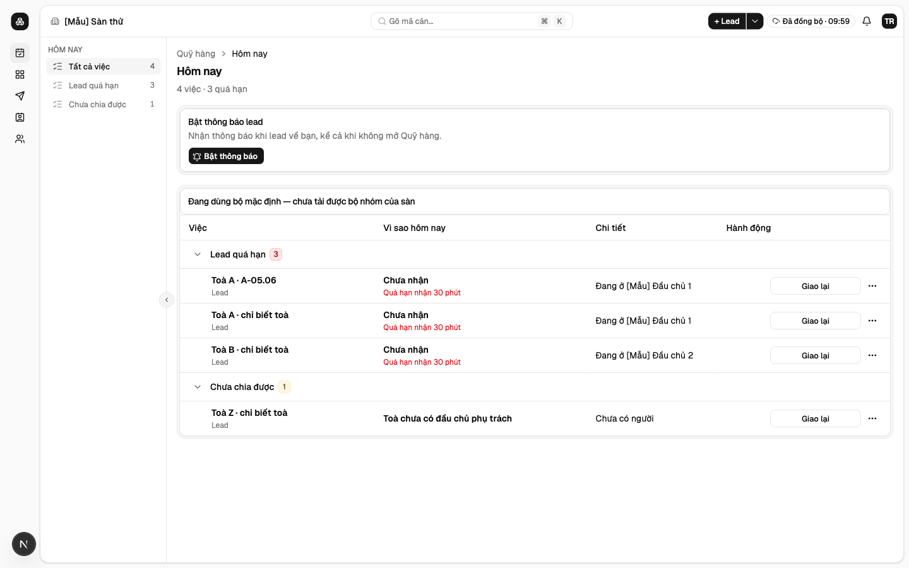
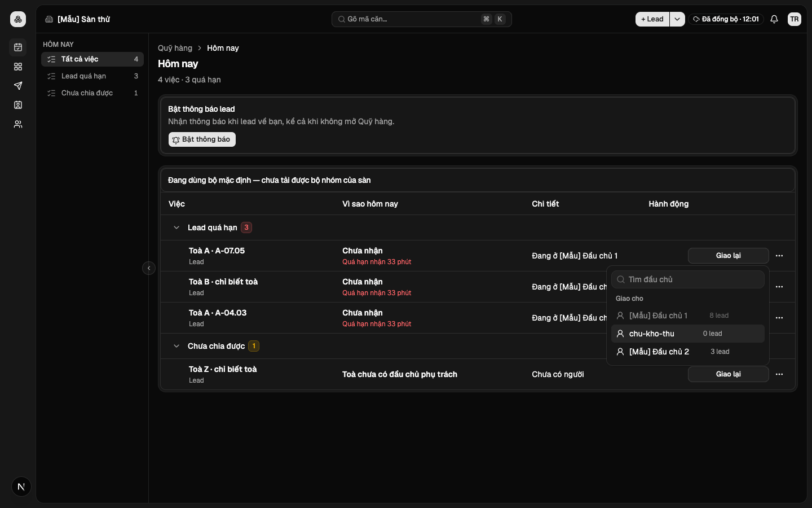
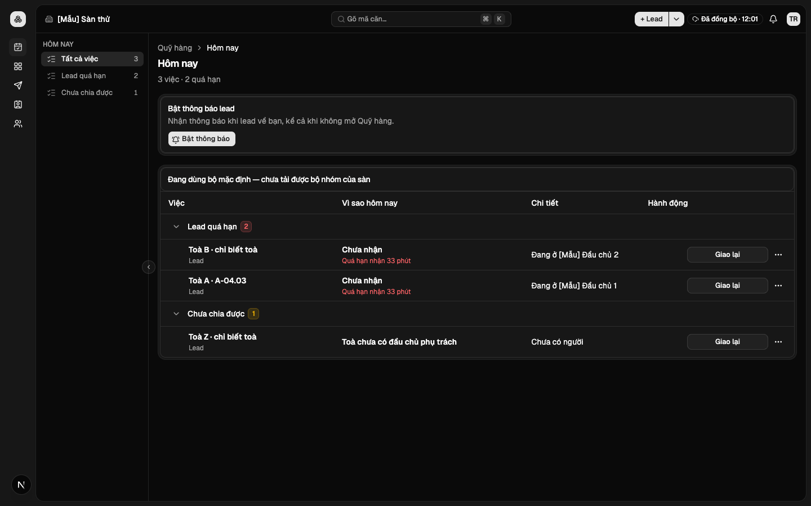
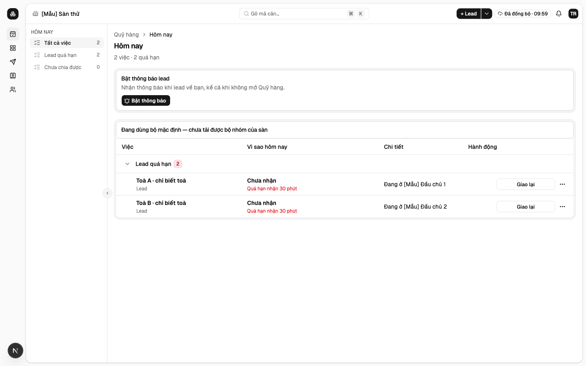


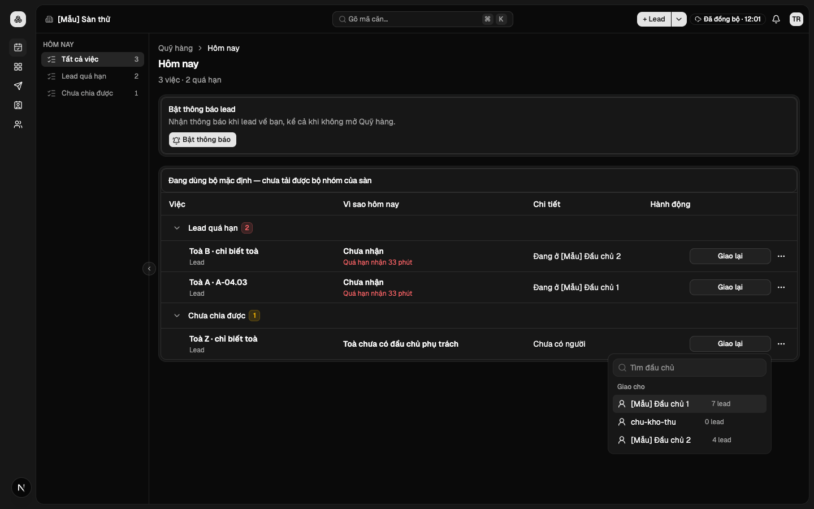
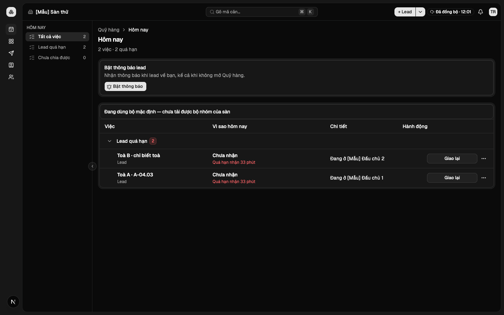
PASS E3b · test
AC-3: (cross-layer) Given trưởng nhóm và một lead quá hạn, When bấm «Giao lại» trên dòng và chọn đầu chủ, Then lead được giao
ℹ duration_ms 140074.917167
PASS E4 · test
AC-4: (cross-layer) Given telesales có lead bị trả lại và lead đang chạy, When mở Hôm nay, Then lead bị trả lại là một việc
ℹ duration_ms 4290.641875
PASS E4b · ui-check
AC-4: (cross-layer) Given telesales có lead bị trả lại và lead đang chạy, When mở Hôm nay, Then lead bị trả lại là một việc
PASS E5 · test
AC-5: Given đầu khách có tin khách phản ứng, căn vừa đổi, căn mới khớp, When mở Hôm nay, Then mỗi tin trong 48 giờ là một việc
ℹ duration_ms 4290.641875
PASS E5b · ui-check
AC-5: Given đầu khách có tin khách phản ứng, căn vừa đổi, căn mới khớp, When mở Hôm nay, Then mỗi tin trong 48 giờ là một việc
PASS (CARRY-FORWARD TỪ ROUND 1) E6 · ui-check
AC-6: Given trưởng nhóm, When mở `/team`, Then thấy ba ô số và bảng theo đầu chủ với số giống Hôm nay trưởng nhóm trước
PASS (CARRY-FORWARD TỪ ROUND 1) E7 · ui-check
AC-7: Given đầu khách, When mở mục «Tin của khách» ở cột thứ hai của Đã gửi, Then thấy tin 7 ngày như vùng Đầu khách cũ, bố
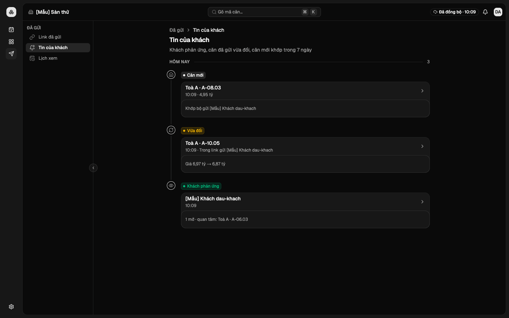
PASS E8 · test
AC-8: Given người xem theo từng tổ hợp vai và sàn đã đổi tên một nhóm, kể cả nhóm của vai khác đầu chủ, When xem cột thứ hai của
ℹ duration_ms 4290.641875
PASS E8b · ui-check
AC-8: Given người xem theo từng tổ hợp vai và sàn đã đổi tên một nhóm, kể cả nhóm của vai khác đầu chủ, When xem cột thứ hai của
PASS E9 · test
AC-9: Given một nguồn trả 500 hai lần liên tiếp, When mở Hôm nay, Then có đúng một dòng báo nêu tên nguồn và một «Thử lại»,
ℹ duration_ms 4290.641875
PASS E9b · ui-check
AC-9: Given một nguồn trả 500 hai lần liên tiếp, When mở Hôm nay, Then có đúng một dòng báo nêu tên nguồn và một «Thử lại»,

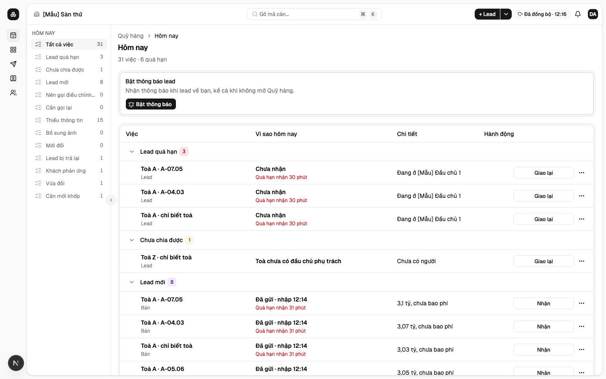
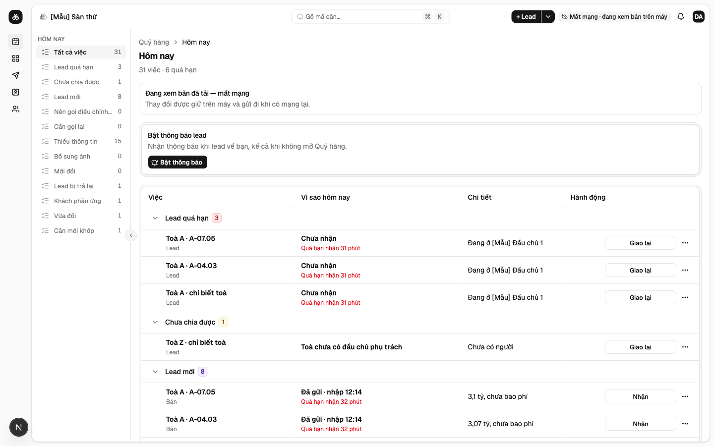
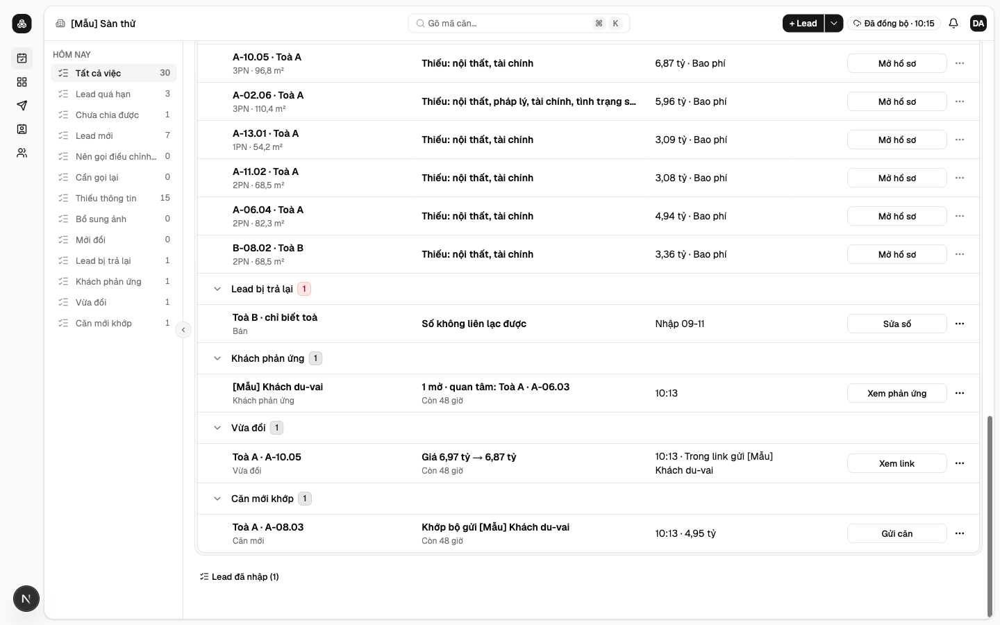
PASS E10 · ui-check
AC-10: Given khổ 375 ở mọi vai, When xem Hôm nay, Then mỗi việc là thẻ hai tầng, tên căn và toà đọc đủ không bị nút ép, trưởng
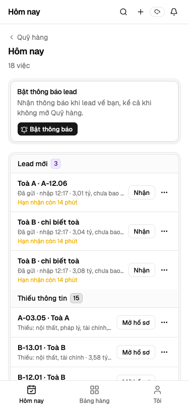

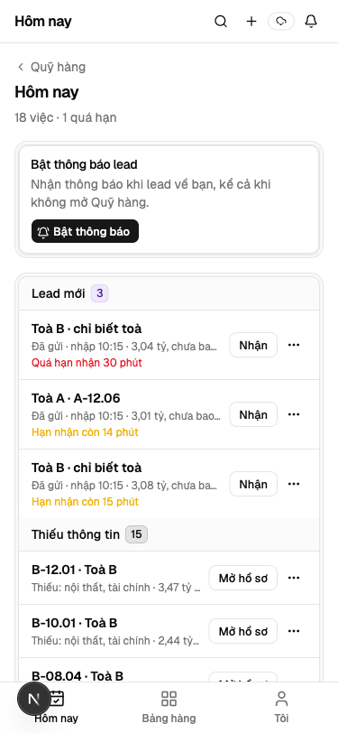

PASS (ĐẠT CÓ GIỚI HẠN) E11 · script
AC-1: Given người mang bất kỳ vai nào có Hôm nay, When mở `/today` trên máy tính, Then trang có một vùng chính, một tiêu đề
33 tệp giao diện ngoài bản đồ
PASS E11b · script
AC-1: Given người mang bất kỳ vai nào có Hôm nay, When mở `/today` trên máy tính, Then trang có một vùng chính, một tiêu đề
E11b: chỉ có dòng báo oan đã khai: lệch: apps/web/src/app/(app)/shares/tin/page.tsx · thuộc hai nhóm màn: hom-nay-dau-khach, trang-tam
Eval không phân biệt (Analyst)
Vòng verify
- Round 1: chấm lần đầu; E6 và E7 đạt và được mang sang round 2 (carry-forward).
- Round 2: chấm lại phần còn lại trên commit 10e3aab8; mọi eval đạt, E11 đạt có giới hạn (khai trước, kèm E11b).
Tài nguyên
| Khối | Tác tử | Token đầu ra |
|---|---|---|
| S4 round 2 | 29 | 219.793 |
1 lượt chấm · tổng 219.793 token
Giới hạn và ngoài hợp đồng
- Sàn ẩn hay đổi thứ tự nhóm của vai khác đầu chủ (đổi tên thì có, Hỏi-5); nút «Xong» cho việc đầu khách.
- Gộp lời gọi đọc và tải trước đường dẫn (R5 của audit).
- Bấm cả dòng để mở chi tiết.
- Đổi luật nhóm căn, luật chia lead, luật ẩn.
- Đổi chữ «Lead» theo hàng `doi-chu-lead-co-hoi`.
- E11 (AC-1) dat-co-gioi-han: ma thoat 1 la ket qua DA KHAI TRUOC cua eval nay, khong phai mot luot truot. Lenh: R="${CLAUDE_PLUGIN_ROOT:-$(node packages/ui-lint/tim-kit.mjs)}" && node "$R/scripts/design-floor-khuon.mjs" --kiem --root .
Giao
chưa ghi quan sát production